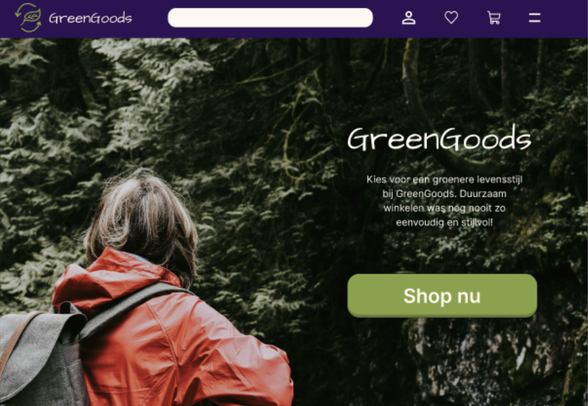
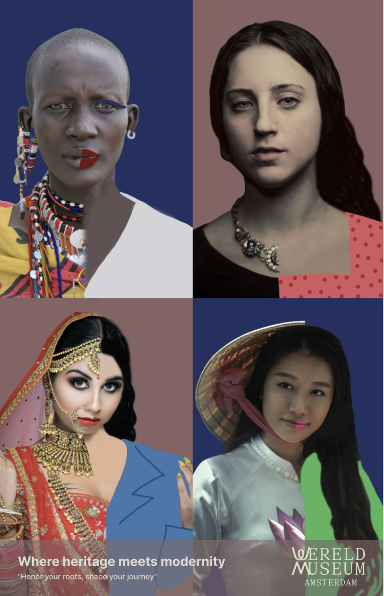
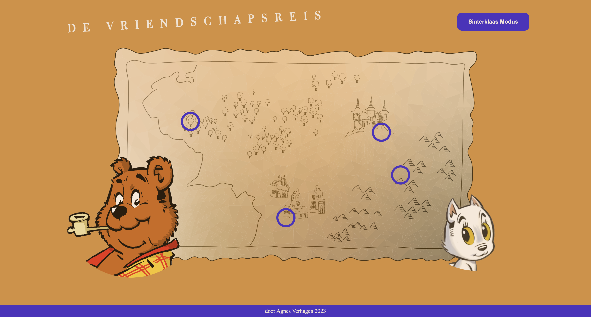
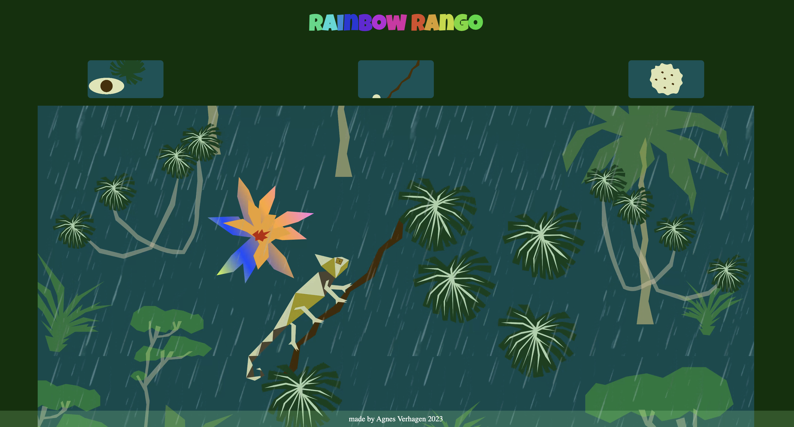
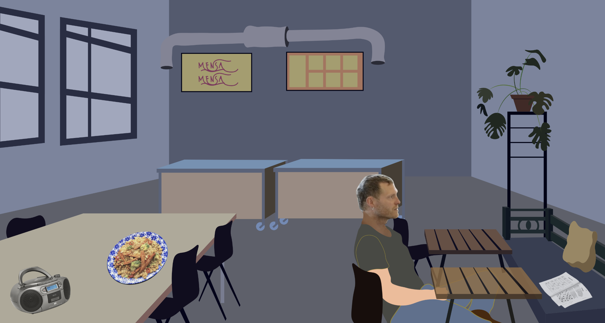

Overzicht vakken minor VID
Van sept 2023 tot eind jan 2024 heb ik de minor Visual Interface Design gevolgd voor de studie CMD aan de HvA. Deze minor bestond uit diverse vakken:
Neem gerust een kijkje hieronder om te zien wat ik heb gemaakt.
-

Grid & kleur
Ik heb een prototype gemaakt in Figma met als thema duurzaamheid. Ik heb gekozen voor een webshop met duurzame beauty producten. Hierbij heb ik gekeken naar een consistente layout en ik heb gekeken naar het gebruik van kleur, grid, afbeeldingen en hiërarchie in typografie. Ik heb het contrast van kleuren gecheckt, bij tekst op buttons en vlakken van verschillende kleuren en ik heb geprobeerd een balans te vinden qua witruimte en interface elementen om zo een goed leesbare layout te maken. Ik had nog niet eerder met Figma gewerkt, dus ik ben er trots op dat ik dit geleerd heb binnen een relatief korte tijd.
-

Typografie
Voor het vak Typografie heb ik 2 opdrachten gekregen. De eerste opdracht was het maken van een analoge poster, dus van papier, zie dit Miro bord. Hierop liet ik een woord zien van 4 letters in een specifiek lettertype en de betekenis van het woord en de stijl van de letters moesten passen bij het lettertype. Ik heb het woord 'Gate' gekozen met het lettertype Eccentric en de letters van het woord heb ik ook sierlijk en lang gemaakt, als de poort die ik op de achtergrond getekend had. Vervolgens ging ik het gekozen font Eccentric digitaal weergegeven, op een zo visueel mogelijke manier, dus door middel van toepassingen van het font, voorbeelden in de praktijk, tekstuele beschrijvingen, animaties.
-

Beeldtaal
Bij beeldtaal heb ik 3 opdrachten uitgevoerd. De eerste was om 3 visuals te maken waarbij er in iedere visual hetzelfde voorwerp is afgebeeld en elke visual laat het object zien in een andere context. Voor de tweede opdracht heb ik een bestaande poster geanalyseerd met de principes van semantiek, retorica en gestaltwetten. Vervolgens heb ik zelf een aanpassing gemaakt aan de poster om de boodschap nog sterker over te laten komen. Als laatste opdracht heb ik zelf een poster gemaakt met als onderwerp dat mensen van bepaalde culturen niet hun roots moesten vergeten, omdat ze daar trots op mogen zijn.
-

Interface & interactie
Voor dit vak kreeg ik de uitdaging om een interactieve interface te maken voor desktop en je mocht zelf een onderwerp uitkiezen dat je interessant vond. De interface moest hiervoor echt heel specifiek passen bij het gekozen onderwerp. Als onderwerp heb ik gekozen voor de ontwikkeling van de vriendschap van Heer Bommel en Tom Poes. Dit zijn figuren uit een boekenreeks van Tom Poes die ik al van jongs af aan lees. En de vorm van de interface is een landkaart met locatiepunten van de avonturen van Heer Bommel en Tom Poes.
-

Interface & beweging
Bij interface en beweging ging ik een interface maken voor desktop waarbij ik 3 animaties liet zien. Ik heb illustraties gemaakt in Illustrator en de animaties gemaakt in After Effects. Ik had nog niet eerder gewerkt met After Effects en ik ben blij dat ik heb geleerd om animaties te maken. De buttons waarmee je de animaties kan kiezen hebben ook een hover animatie, zodat je snapt waar de gekozen animatie over gaat. Ik heb als onderwerp een kameleon uitgekozen in de jungle. Bij de eerste animatie verandert hij van kleur, bij de tweede loopt hij over een tak en bij de laatste eet hij een sprinkhaan. Tip: als je mijn github repository bekijkt, klik dan op de groene 'code' knop en uit de dropdown kies 'download de zip'.
-

Meesterproef
Als afsluiting van de minor heb ik een meesterproef gemaakt. Ik heb een interface gemaakt voor desktop en als onderwerp heb ik gekozen voor een artikel uit de Correspondent, die ging over dat gezond eten een basisrecht zou moeten zijn. Floris Visser, de man waar het artikel over gaat, heeft een volkskantine opgericht in Rotterdam om gezond betaalbaar eten aan te bieden. Ik heb die volkskantine nagemaakt in Illustrator en ik heb een paar interactieve elementen toegevoegd. Een bord eten laat bijvoorbeeld een drag & drop game zien waarbij je voedselgroepen op de juiste plek in de Schijf van 5 kan slepen. En zo heb ik nog meer elementen interactief gemaakt, dit kun je zelf ontdekken.